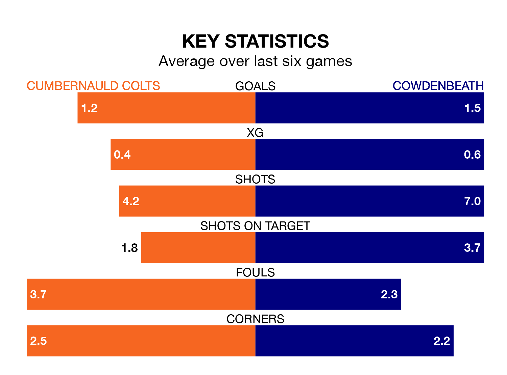

Cumbernauld Colts host Cowdenbeath on Saturday at the Broadwood Stadium in the Lowland Football League.
In their last league match, on Tuesday, Cumbernauld Colts lost to Celtic B 3-0 away.
Cowdenbeath won, 1-0 away at Linlithgow Rose on March 30.
With 60 goals in 31 games so far this season, Cumbernauld Colts are scoring more than average in the league with 1.9 goals per game. And they are conceding fewer than average, letting in 39 goals at a rate of 1.3 per game.
Cowdenbeath, meanwhile, are average scorers, with 1.6 goals per game. They have conceded 1.5 goals per game.
Colts are fifth in the table after 31 games, of which they have won 16 and drawn eight, earning 56 points.
The away side are six places behind the hosts in 11th, with 11 wins and 10 draws putting them on 43 points.
Cumbernauld Colts are in disappointing form in the Lowland Football League, with one win and three draws from their last six games.
With three wins and a draw over that period, Cowdenbeath's form is better – they have taken 10 points from 18, compared to Cumbernauld Colts's six.
In the last three years, Cumbernauld Colts and Cowdenbeath have played each other on three occasions. Cumbernauld Colts won two of them and Cowdenbeath one.
Their last meeting was on September 30, when Cumbernauld Colts won 2-0 away.
Updated: 16:41 (UTC), 04/04/24